Ramose
murex
Chicoreus ramosus
Family Muricidae
updated
Feb 2020
Where
seen? This large and beautifully sculptured snail is sometimes seen, often many of similar size can be seen at one location, then none seen for some time. It is considered the
largest murex in the Indo-Pacific. Elsewhere found near reefs and
considered common, partially or completely buried in sand.
Features: 20-30cm long, thick
heavy shell with short 'frilly' or leafy spines, usually white. Bright orange edge at the shell opening. Large
brown operculum made of a horn-like material. Animal is large and fleshy, brownish.
What does it eat? It feeds on
clams and snails and is considered a pest on pearl oyster beds.
Human uses: It is actively collected
in some parts of the world.
Status
and threats: This snail is listed as 'Endangered' on the
Red List of threatened animals of Singapore. |
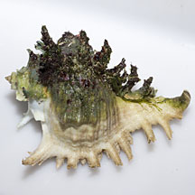
Cyrene Reef, Aug 13 |
|
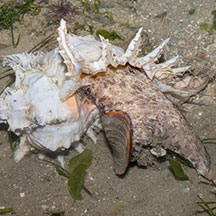
Changi, May 17
Photo shared by Marcus Ng on facebook. |
| Ramose
murex on Singapore shores |
| Other sightings on Singapore shores |
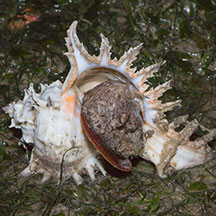
Changi, May 17
Photo shared by Marcus Ng on facebook.. |
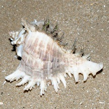
Changi, Jul 12
Photo shared by Loh Kok Sheng on his
blog. |
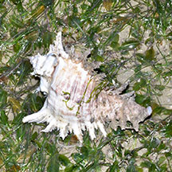
Changi, May 17
Photo shared by Loh Kok Sheng on facebook. |
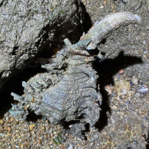
Changi SAF Chalet, May 25
Photo shared by Adriane Lee on facebook |
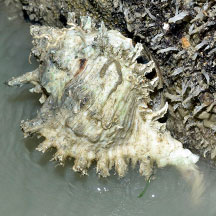
Changi SAF Chalet, Nov 25
Photo shared by Loh Kok Sheng on facebook |

Pulau Sekudu, Jul 19
Photo shared by Rene Ong on facebook |
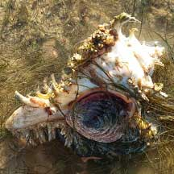
East Coast Park (B), Jun 21
Photo shared by Richard Kuah on facebook |
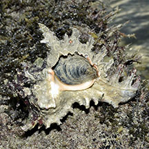
East Coast Park (B), Nov 25
Photo
shared by Loh Kok Sheng on facebook. |
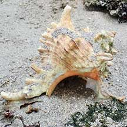
Pulau Semakau (East), Apr 22
Photo shared by Juria Toramae on facebook |
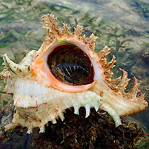
Cyrene Reef, Dec 16
Photo shared by Ian Siah on facebook |
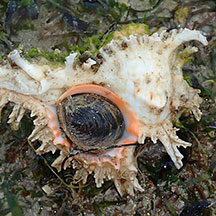
Cyrene Reef, Feb 20
Photo shared by Toh Chay Hoon on facebook |
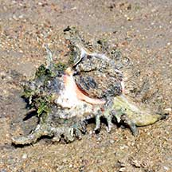
Terumbu Pempang Tengah, May 21
Photo shared by Loh Kok Sheng on facebook |
|
Links
References
- Spencer Yau Jia Ming, Sarah Priyanka Nelson & Bryan Wong Kang Ing. 30 September 2020. Ramose murex snails at Changi Beach. Singapore Biodiversity Records 2020: 136-137. The National University of Singapore.
- Toh Chay Hoon & Tan Siong Kiat. 10 July 2015. Ramose murex Chicoreus ramosus spawning at Pulau Hantu. Singapore Biodiversity Records 2015: 92-93
- Tan Siong
Kiat and Henrietta P. M. Woo, 2010 Preliminary
Checklist of The Molluscs of Singapore (pdf), Raffles
Museum of Biodiversity Research, National University of Singapore.
- Davison,
G.W. H. and P. K. L. Ng and Ho Hua Chew, 2008. The Singapore
Red Data Book: Threatened plants and animals of Singapore.
Nature Society (Singapore). 285 pp.
- Abbott, R.
Tucker, 1991. Seashells
of South East Asia.
Graham Brash, Singapore. 145 pp.
|
|
|